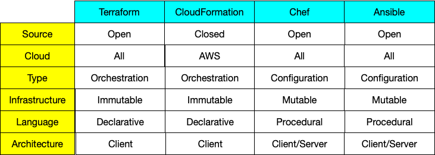
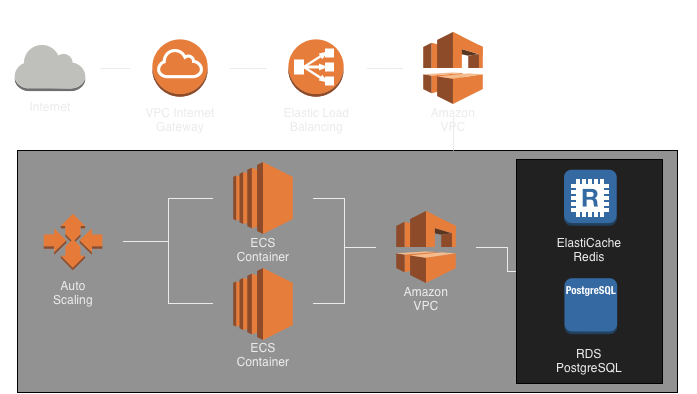
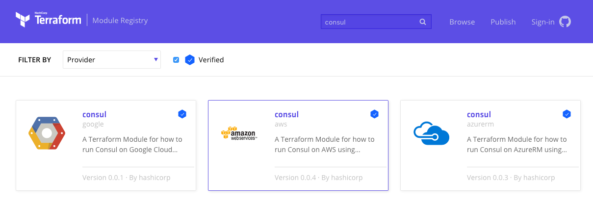

Infrastructure As Code
Terraform
About Me
About Me
19 Years in Business
5x @ ConFoo
Published Author
Software Consultants
Invented the Internet
To our success!
WebSocket Book

http://bit.ly/websocketbook
Why Terraform
Rack Servers
Key Points
Codeable
Versioned
Refactorable
Difference with Puppet, etc
Orchestration vs Configuration
Immutable vs Mutable
Procedural vs Declarative
Client-Only vs Client/Server
Comparison
Example Infrastructure
Main Config
State
Providers
Modules
Backends
Variables
Backends
Describes how to load state in Terraform.
Backend Types
|
|
Local Backend
Default backend, not required unless specifying alternate path
terraform {
backend "local" {
path = "path/to/terraform.tfstate"
}
}
Alternate Backend
terraform {
backend "s3" {}
}
Where's the config though?
Config in File
./backend.tfvars
region = "us-east-1"
bucket = "unique-named-terraform-bucket"
key = "my-cool-server.tfstate"
Modules
Encapsulates common patterns for use in multiple projects
Module Sources
- local
- tf registry
- github
- bitbucket
- git/mercurial
- http
- s3
RDS Example
module "rdp_rds_instance" {
source = "github.com/terraform-community-modules/tf_aws_rds.git?ref=v1.0.1"
# RDS Instance Inputs
rds_instance_identifier = "${var.rds_instance_identifier}"
rds_allocated_storage = "${var.rds_allocated_storage}"
rds_engine_type = "${var.rds_engine_type}"
...
}
Terraform Registry
Community Modules
Providers
Manage the lifecycle of a resourceAvailable Providers
- Cloud Providers
- DNS
- Data Storage
- Code Repositories
- https://www.terraform.io/docs/providers/
AWS
Supports all of the various modules and services available within Amazon's service infrastructure
Many more...
Azure, Google Cloud, Digital Ocean, Cloudflare, etc
Our infrastructure
Get any modules in .tf files
% terraform get
Get: git::https://github.com/terraform-community-modules/tf_aws_rds.git?ref=v1.0.1
Initialize new / existing state
% terraform init
Terraform has been successfully initialized!
You may now begin working with Terraform. Try running "terraform plan" to see
any changes that are required for your infrastructure. All Terraform commands
should now work.
If you ever set or change modules or backend configuration for Terraform,
rerun this command to reinitialize your environment. If you forget, other
commands will detect it and remind you to do so if necessary.
Check the plan
Plan is a great way to review and ensure that terraform will do what you expect
% terraform plan
The Terraform execution plan has been generated and is shown below.
Resources are shown in alphabetical order for quick scanning. Green resources
will be created (or destroyed and then created if an existing resource
exists), yellow resources are being changed in-place, and red resources
will be destroyed. Cyan entries are data sources to be read.
Note: You didn't specify an "-out" parameter to save this plan, so when
"apply" is called, Terraform can't guarantee this is what will execute.
~ aws_ecs_service.api
task_definition: "j2d-api:3" => "${aws_ecs_task_definition.api.family}:${max(\"${aws_ecs_task_definition.api.revision}\", \"${data.aws_ecs_task_definition.api.revision}\")}"
<= data.aws_ecs_task_definition.api
family: ""
network_mode: ""
revision: ""
status: ""
task_definition: "j2d-api"
task_role_arn: ""
Plan: 0 to add, 1 to change, 0 to destroy.
Apply the plan
% terraform apply
Apply complete! Resources: 0 added, 0 changed, 0 destroyed.
Outputs:
api_repo_url = 193899913659.dkr.ecr.us-east-2.amazonaws.com/api
api_service_name = j2d-api
api_task_arn = arn:aws:ecs:us-east-2:193899913659:task-definition/j2d-api:3
asg_name = j2d-asg
cluster_name = j2d
elasticache_security_group = sg-3068f858
elb_dns_name = j2d-default-503046154.us-east-2.elb.amazonaws.com
elb_security_group = sg-4064f428
j2d_cluster_arn = arn:aws:ecs:us-east-2:193899913659:cluster/j2d
j2d_vpc = vpc-ac0503c5
launch_configuration = j2d-asg-lc
name = j2d
rds_security_group = sg-1a66f672
region = us-east-2
Outputs
Extract and query information about infrastructure
output "name" {
value = "${var.name}"
}
output "region" {
value = "${var.aws_region}"
}
output "cluster_name" {
value = "${aws_ecs_cluster.default.name}"
}
output "rds_security_group" {
value = "${aws_security_group.j2d_postgresql_rds.id}"
}
Output Command
% terraform output
api_repo_url = 193899913659.dkr.ecr.us-east-2.amazonaws.com/api
api_service_name = j2d-api
api_task_arn = arn:aws:ecs:us-east-2:193899913659:task-definition/j2d-api:3
asg_name = j2d-asg
cluster_name = j2d
elasticache_security_group = sg-3068f858
elb_dns_name = j2d-default-503046154.us-east-2.elb.amazonaws.com
elb_security_group = sg-4064f428
j2d_cluster_arn = arn:aws:ecs:us-east-2:193899913659:cluster/j2d
j2d_vpc = vpc-ac0503c5
launch_configuration = j2d-asg-lc
name = j2d
rds_security_group = sg-1a66f672
region = us-east-2
Variables
- Parameterization of configuration
- Overridden via CLI
variable "name" {
description = "App Name"
}
variable "aws_region" {
description = "The AWS region to run the cluster."
}
variable "key_name" {
description = "Name of AWS key pair"
}
Import
- Bring existing resources under Terraform management
- Current state only
- Requires building configuration manually
- Future version will generate
Alternatives to Terraform
AWS CloudFormation
OpenStack Heat
Ansible / Puppet / Chef
Roll your own
Fin
Q & A
Andrew Lombardi / @kinabalu
Mystic Coders, LLC